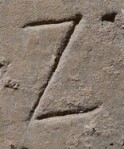

Z - type1
- Script
- Latin
- Grapheme
- Z
- Allograph
- type1
- Characteristic form:
-
- bottom-bar is horizontal
- bottom-bar is straight
- middle-bar is diagonal
- middle-bar is straight
- top-bar is horizontal
- top-bar is straight
Typology
Exemplar

Origin: Thermae Himeraeae
between AD 1 and AD 300